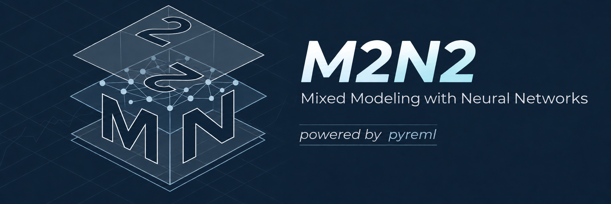

Mixed modeling with neural networks, built on  .
.
The random design of a linear mixed model is the embedding of a neural network, trained jointly with the fixed effects and the variance components on the REML loss.
Installation
Install m2n2 with pip:
pip install m2n2The model
m2n2 fits a linear mixed model built upon the neural network \(\nu\) of parameters \(\theta\):
\[ y = X\beta + Z_G u_G + Z_S u_S + r \qquad z_i \mapsto \nu(z_i, \theta) \in \mathbb{R}^d \]
- \(X\): fixed effects design matrix, provided from a
patsyformula. - \(\beta\): fixed effects.
- \(z_i\): features of individual \(i\) (e.g. SNPs).
- \(Z_G = \nu(z, \theta)\): general design matrix, embedding of the features by the network of dimension \(n \times d\).
- \(Z_S = \bigoplus_{k=1}^{q} \nu(z_{(k)}, \theta)\): specific design matrix of dimension \(n \times qd\) for the \(q\) groups.
- \(u_G \sim N(0, \sigma^2_G I), u_G \in \mathbb{R}^d\): general embedding effects.
- \(u_S \sim N(0, \sigma^2_S I), u_{S} \in \mathbb{R}^{qd}\): group-specific embedding effects (optional).
- \(r \sim N(0, \sigma^2_R I)\): residual.
Example
from functools import partial
import numpy as np
import matplotlib.pyplot as plt
import torch
import torch.nn as nn
from meiosim import Arabidopsis
from meiosim.Population import MISSING
from m2n2 import MixedModelNN
pop = Arabidopsis(n_SNPs=10_000, seed=42)
data = pop.phenotypes[["individual", "DTF1"]].merge(
pop.metadata[["individual", "country"]], on="individual"
)
z = pop.genotypes.astype(np.float32)
z[z == MISSING] = np.nan
z = torch.tensor(np.where(np.isnan(z), np.nanmean(z, axis=0), z))
class Network(nn.Module):
def __init__(self, z):
super().__init__()
self.register_buffer("z", z)
self.body = nn.Sequential(
nn.Dropout(0.1),
nn.Linear(z.shape[1], 256), nn.BatchNorm1d(256), nn.GELU(), nn.Dropout(0.5),
nn.Linear(256, 128), nn.BatchNorm1d(128), nn.GELU(), nn.Dropout(0.5),
nn.Linear(128, 64),
)
def forward(self, rows=None):
return self.body(self.z if rows is None else self.z[rows])
torch.manual_seed(42)
network = Network(z) # /!\ z and data must be perfectly aligned
model = MixedModelNN.from_dataframe(
data,
response="DTF1",
Z=network,
specificity="country",
optimizer=partial(
torch.optim.AdamW,
lr=1e-3,
weight_decay=1e-1
),
lr_beta=1e-2,
lr_var=1e-2,
)
model.fit(
n_epoch=1000,
batch_size=256,
validation=0.2,
patience=50,
verbose=False,
)
fig, (ax_loss, ax_score) = plt.subplots(1, 2, figsize=(10, 3.5))
ax_loss.plot(model.loss)
ax_loss.set_xlabel("epoch")
ax_loss.set_ylabel("REML -2logLik")
ax_score.plot(model.score)
ax_score.axvline(np.argmin(model.score), color="grey", linestyle="--")
ax_score.set_xlabel("epoch")
ax_score.set_ylabel("validation MSE")
plt.show()
model.plot()
model.varcomp()Manual contents
Code
The code is available at this address.
License
m2n2 is distributed with a GPL-3.0 license.
Copyright © 2026 CNRS, University of Montpellier